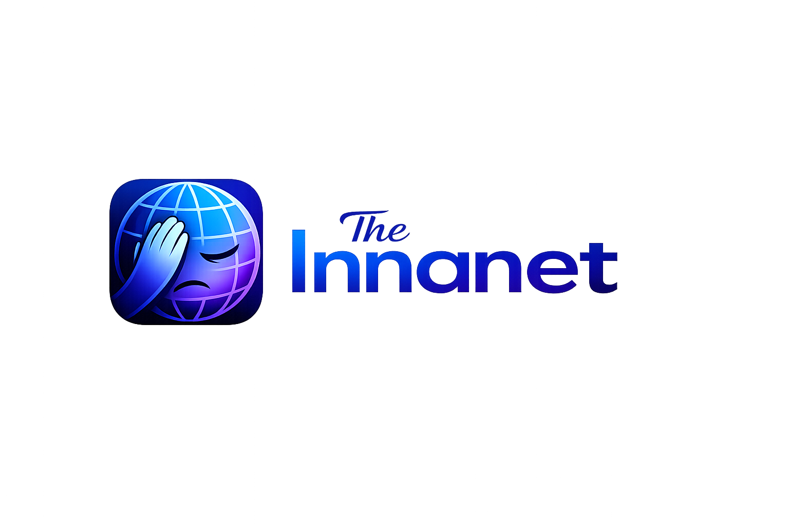
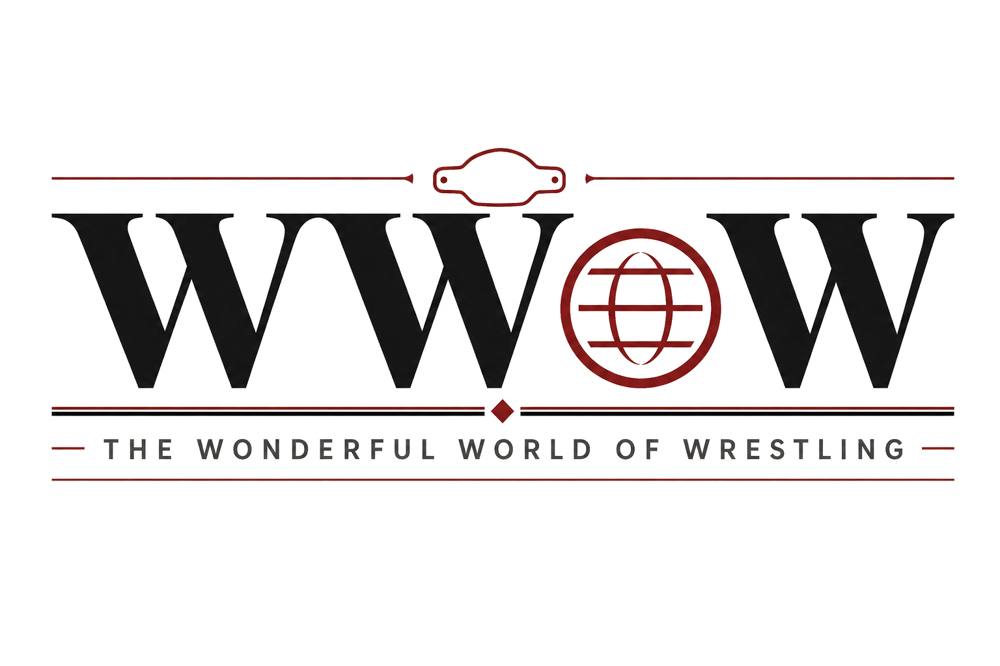
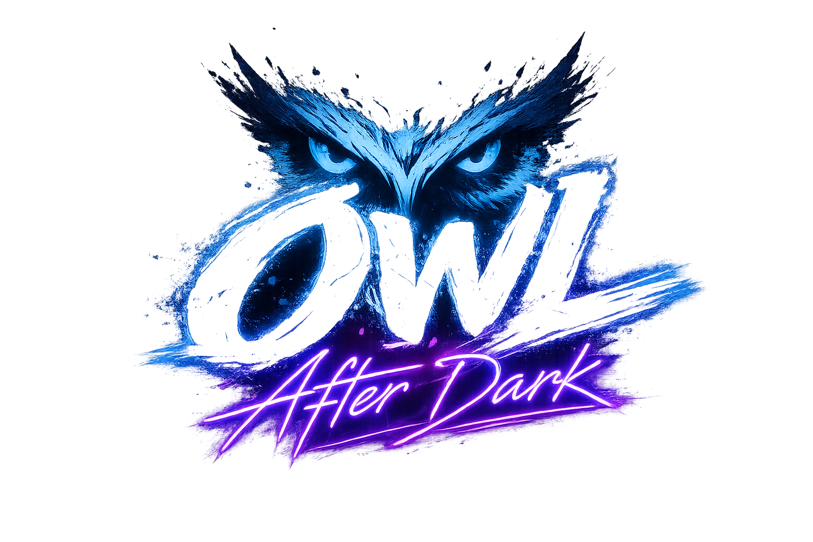
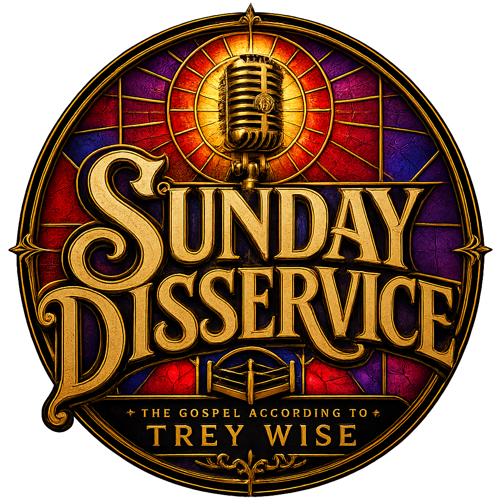

The InnanetEverybody has an opinion. Unfortunately, they have Wi-Fi too.
Enter The FeedTHE VOICES AROUND THE BELL
Reaction. Reporting. Recaps. Opinions. Every version of the story lives here.

The InnanetEverybody has an opinion. Unfortunately, they have Wi-Fi too.

The Wonderful World of WrestlingReporting, analysis, columns, rumors, retrospectives, and stories from across the wrestling world.

OWL After DarkWhen Revolt ends, the conversation begins. Ascension and Revolt recapped together through results, reactions, developing stories, and the moments everybody will still be discussing tomorrow.

Sunday DisserviceThe Gospel According to Trey Wise
Trey Wise delivers the final word on the week, challenges OWL narratives, defends his favorites, and treats every opinion like established doctrine.
THE UNIVERSE REMEMBERS
The Innanet preserves what people believed in the moment. WWoW records how the wrestling world understood it afterward. OWL After Dark follows the immediate fallout, while Trey Wise makes sure no argument is ever allowed to die peacefully.